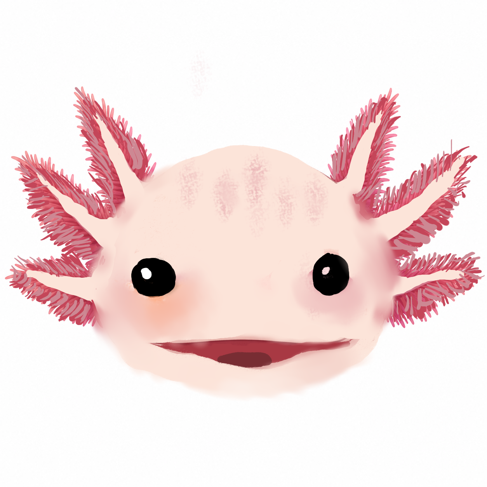

¡Juega y aprende!
Aquí puedes agregar un juego interactivo para niños. Por ejemplo: memorama, trivias o retos sobre especies mexicanas.
Jugar ahora
Aprende sobre animales increíbles que solo viven en México. Un sitio educativo e interactivo para niños.

Descubre los bosques donde viven muchas especies mexicanas.
Conoce lagos, ríos y mares llenos de biodiversidad.
Las especies ayudan a mantener el equilibrio de la naturaleza.
La contaminación y la pérdida de hábitat ponen en riesgo a los animales.
Reciclar, ahorrar agua y cuidar los ecosistemas.
Aquí puedes agregar un juego interactivo para niños. Por ejemplo: memorama, trivias o retos sobre especies mexicanas.
Jugar ahora
Endémico es un sitio educativo pensado para niños. Su objetivo es enseñar sobre las especies endémicas de México mediante ilustraciones, juegos y contenido interactivo.